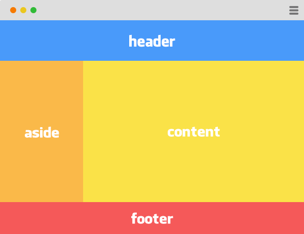
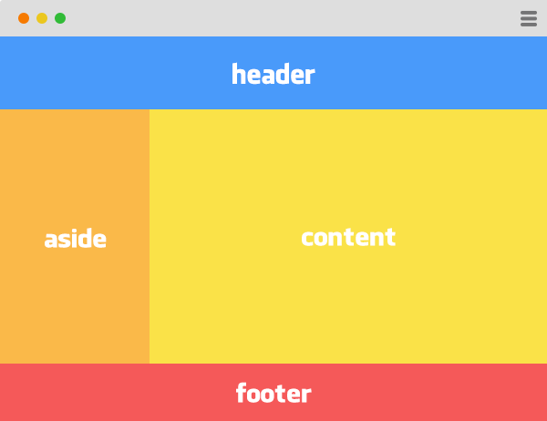

Podstawowy układ strony
Zazwyczaj większość najprostszych stron składa się z nagłówka, stopki i dwóch kolumn. Jednak bloki div domyślnie ustawiają się jeden pod drugim, gdyż są elementami blokowymi.
Więc jak zbudować taką stronę jak na rysunku? Gdzie ma dwie kolumny obok siebie....

Jest to bardzo łatwe, słuzy do tego
Więc jak zbudować taką stronę jak na rysunku? Gdzie ma dwie kolumny obok siebie....

Jest to bardzo łatwe, słuzy do tego
float
Wystarczy dodać dwie właściwości w CSS
#aside
{
float
: left
;
width
: 200px
;
}
#content
{
float
: left
;
width
: 700px
;
}
Dzięki left bloki zaczęły się ustawiać od lewej strony krawędzi strony. Należy ustalić dowolną szerokość bloków, aby ustawiły się poprawnie
Float przyjmuje właściwości:
- none
- left
- right
- initial
- inherit
Co ze stopką?
Aby stopka ułożyła się w osobnym wierszu, pod dwoma kolumnami, nalezy wyczyścić formatowanie:
footer
{
clear
: both
;
}
 Powróć do menu głównego CSS
Powróć do menu głównego CSS